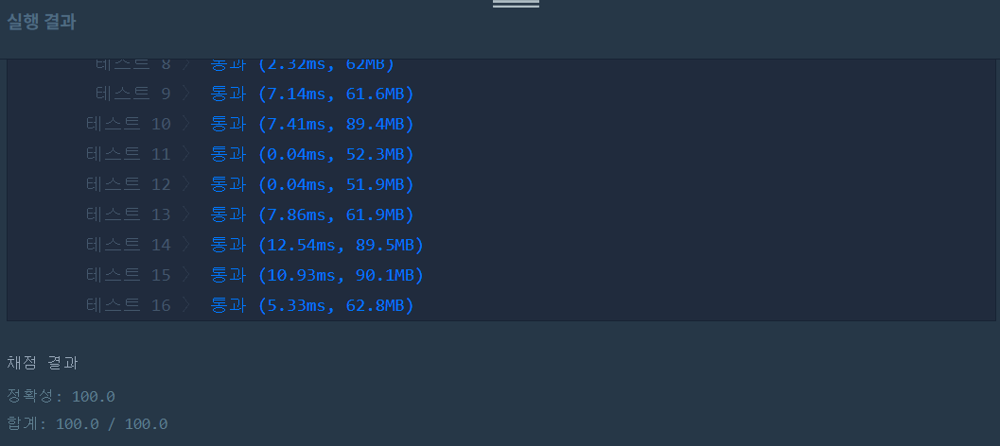

👀 문제
https://programmers.co.kr/learn/courses/30/lessons/68936
👊 도전
1. 설계
- 분할정복 문제이다.
- 배열 시작점 (x, y)에서 체크할 사각형 길이 k를 파라미터로 전달하고, 해당 범위가 같은 값으로 이루어져 있다면 그 원소 값을 하나 증가시킨다.
- 같은 값이 아니라면, 범위를 k/2로 줄이고 다시 재귀호출한다.
2. 구현
1
2
3
4
5
6
7
8
9
10
11
12
13
14
15
16
17
18
19
20
21
22
23
24
25
26
27
28
29
30
31
32
33
34
35
36
37
38
39
40
41
42
43
44
45
46
47
48
49
50
import java.util.*;
/**
*
* @author HEESOO
*
*/
class Solution {
static int[][] map; // arr 참조 전역변수
static int zero, one; // 각 개수 카운트
public int[] solution(int[][] arr) {
int[] answer = {};
int n=arr.length;
map=arr;
zero=0;
one=0;
check(0, 0, n);
answer=new int[2];
answer[0]=zero;
answer[1]=one;
return answer;
}
public void check(int x, int y, int k){
if(isPossible(x, y, k)){ // (x, y)에서 k범위까지가 같은 값으로 이루어져 있으면
int val=map[x][y]; // 그 값 가져오기
if(val==1) one++; // 맞는 변수++
else zero++;
return;
}
// 같은 값으로 이루어져 있지 않다면
int half=k/2; // 범위 줄이기
// 새 범위로 다시 재귀 호출
check(x, y, half);
check(x, y+half, half);
check(x+half, y, half);
check(x+half, y+half, half);
}
public boolean isPossible(int x, int y, int k){
int val=map[x][y]; // 배열을 체크할 기준 값
for(int i=x;i<x+k;i++){
for(int j=y;j<y+k;j++){
if(map[i][j]!=val) return false; // 다른게 하나라도 있으면 F
}
}
return true; // 모두 다 같은 값
}
}
3. 결과
 🤟 성공 🤟
4. 설명
- check()
- 시작점 (x, y)에서 k만큼을 체크한다는 뜻이다.
- 처음에는 (0,0)에서 n(배열 길이)만큼 isPossible()한다.
- 리턴 값이 T라면 카운트하고 종료하겠지만, 아니라면 n/2의 넓이를 다시 체크해야 한다.
- 이제 시작점은 총 4개로, (0,0), (0, n/2), (n/2, 0), (n/2, n/2)가 된다.
- 이를 다시 재귀호출하여 isPossible인지 확인하고, 아니라면 거기서 또 4개로 쪼개면 된다.
- 어쨌든 현재 체크하는 배열이 F면 4개의 배열로 분할해야 하고, 그 시작점은 위 코드와 같이 유추할 수 있으므로 check()를 4개 다 썼다. 물론 시작점 개수가 많다면 for문을 돌려서 적절하게 check()를 다시 호출할 수도 있다.
- isPossible()
- 파라미터로 받은 범위가 같은 값으로 이루어져 있는지 확인하는 메소드이다.
- val은 시작점의 값을 가져온다. 배열이 같은 값으로 이루어져있는지 확인하기 위한 기준점이 된다. 물론 시작점이 아닌 다른 값을 가져와도 상관없다.
- 배열을 순회하면서 하나라도 다른 값이 있다면 F를 리턴한다.